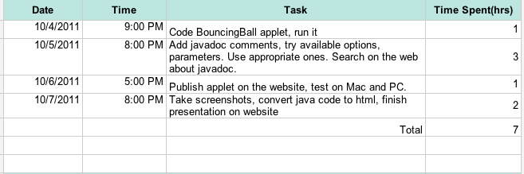

Add javadoc comments to Bouning Ball example.
1: <APPLET codebase="chapter5b/ex52/" code="ex52.BouncingBall.class" WIDTH=250 HEIGHT=150>
2: <param name="delay" value="30">
3: </APPLET>
How to generate javadoc?
$> javadoc -version -author -d docs ex52/*.java
Javadocs
I. Timesheet
II. Source Code
package-info.java
1: /**
2: * The ex52 package is package contains BouncingBall
3: * example applet from Xiaoping Jia's Object-Oriented
4: * Software Development Using Java.
5: * This package summary is in a file named
6: * <code>package-info.java</code>.
7: * @version 1.1
8: * @author Metin Yorulmaz
9: */
10: package ex52;
BouncingBall.java
1: package ex52;
2: import java.awt.*;
3:
4: /**
5: * BouncingBall animated applet.
6: * This is BouncingBall example applet from Xiaoping Jia's Object-Oriented
7: * Software Development Using Java.
8: * Code slightly modified, javadoc comments added.
9: *
10: * Bouncing ball demonstrates how to avoid flickering when working with
11: * graphics. It uses a technique called off-screen drawing or double
12: * buffering. Instead of painting each frame directly to screen, it first
13: * paints it in a temporary buffer in the memory then copies that
14: * frame to the screen.
15: *
16: * @author Xiaoping Jia
17: * @author Metin Yorulmaz
18: * @version 1.0.0
19: * @since 2011-10-06
20: */
21: public class BouncingBall extends java.applet.Applet implements Runnable{
22:
23: /** Color of ball */
24: protected Color color = Color.green;
25:
26: /** Radius of ball */
27: protected int radius = 20;
28:
29: /**Refresh rate of bouncing ball.
30: * Default value is 100 mills, but can
31: * be set by applet parameter 'delay'*/
32: protected int delay = 100;
33:
34: /** X coordinate of center of the ball*/
35: protected int x;
36:
37: /** Y coordinate of center of the ball*/
38: protected int y;
39:
40: /** Variable that determines pixel amount of
41: * horizontal movement of the ball per delay time */
42: protected int dx=-1;
43:
44: /** Variable that determines pixel amount of
45: * vertical movement of the ball per delay time */
46: protected int dy=-5;
47:
48: /** Image to show actual ball.*/
49: protected Image image;
50:
51: /** Graphics object used to implement off-screen drawing.*/
52: protected Graphics offscreen;
53:
54: /**Variable used to hold applet's dimensions.*/
55: protected Dimension d;
56:
57: /**Thread that refreshes screen every delay seconds.*/
58: protected Thread bouncingThread;
59:
60: /**
61: * Initial method called after applet initialized.
62: * Dimension of the applet screen is determined.
63: * 'delay' parameter from applet parameters is read.
64: * @see java.applet.Applet
65: */
66: public void init(){
67: String att = getParameter("delay");
68: if(att != null){
69: delay = Integer.parseInt(att);
70: }
71: d = getSize();
72: x = d.width * 2 / 3;
73: y = d.height - radius;
74: }
75:
76: /**
77: * Calculate the new location of the ball.
78: * Draws the off-screen Image in the memory first.
79: * Then draws that image on the applet.
80: * Use {@link #createImage(int, int)} to generate off-screen image.
81: * @param g Graphics object that rendering the off-screen image.
82: * @see java.applet.Applet
83: * @see Graphics
84: * @see Image
85: */
86: public void update(Graphics g){
87: if(image == null){
88: image = createImage(d.width, d.height);
89: offscreen = image.getGraphics();
90: }
91: offscreen.setColor(Color.white);
92: offscreen.fillRect(0, 0, d.width, d.height);
93: if(x < radius || x > d.width - radius){
94: dx = -dx;
95: }
96:
97: if(y < radius || y > d.height - radius){
98: dy = -dy;
99: }
100: x += dx;
101: y += dy;
102:
103: offscreen.setColor(color);
104: offscreen.fillOval(x-radius, y - radius, radius * 2, radius * 2);
105: g.drawImage(image, 0, 0, this);
106: }
107:
108: /**
109: * This method is called implicitly by the thread that updates
110: * screen to create animation. paint method is invoked when thread repaint
111: * method is called.
112: * Use {@link #update(Graphics)} to animate.
113: * @param g Graphics object to update
114: * @see java.applet.Applet
115: * @see Graphics
116: */
117: public void paint(Graphics g){
118: update(g);
119: }
120:
121: /**
122: * Initializes animation by initializing bouncingThread and activating it.
123: * Called implicitly in lifecycle of applet.
124: * @see java.applet.Applet
125: */
126: public void start(){
127: bouncingThread = new Thread(this);
128: bouncingThread.start();
129: }
130:
131: /**
132: * Stop animation. Called implicitly in lifecycle of applet.
133: * Assign null to bouncingThread to stop it. It gets collected
134: * by garbage collector.
135: * @see java.applet.Applet
136: */
137: public void stop(){
138: bouncingThread = null;
139: }
140:
141: /**
142: * Runs an infinite loop. Wakes the thread up every delay milliseconds,
143: * animate screen (by calling repaint()) then sleep the worker thread.
144: * Called implicitly when thread's start method is called.
145: * @see Thread
146: */
147: public void run() {
148: while(Thread.currentThread() == bouncingThread){
149: try{
150: Thread.sleep(delay);
151: }catch(InterruptedException e){}
152: repaint();
153: }
154:
155: }
156:
157: }